<title>Vier Linien für tamil.de</title>
<meta name="claude:viewport-fit-sides" content="cover">
<style>
@font-face { font-family: "Rethink Sans"; src: url("hm-eigen/schriften/rethink-sans-latin-wght-normal.woff2") format("woff2"); font-weight: 400 800; font-display: swap; }
@font-face { font-family: "Golos Text"; src: url("hm-eigen/schriften/golos-text-latin-wght-normal.woff2") format("woff2"); font-weight: 400 900; font-display: swap; }
:root {
  --bg: oklch(97.6% 0.007 120); --bg-2: oklch(94.6% 0.012 125); --fg: oklch(21% 0.022 155); --fg-2: oklch(42% 0.02 150);
  --rule: oklch(84% 0.015 130); --accent: oklch(50.5% 0.175 25); --accent-ink: oklch(97.6% 0.007 120);
}
@media (prefers-color-scheme: dark) { :root:not([data-theme="light"]) {
  --bg: oklch(20% 0.018 155); --bg-2: oklch(25% 0.02 155); --fg: oklch(95% 0.01 120); --fg-2: oklch(78% 0.02 140);
  --rule: oklch(38% 0.02 150); --accent: oklch(66% 0.17 25); --accent-ink: oklch(18% 0.02 155); color-scheme: dark } }
:root[data-theme="dark"] {
  --bg: oklch(20% 0.018 155); --bg-2: oklch(25% 0.02 155); --fg: oklch(95% 0.01 120); --fg-2: oklch(78% 0.02 140);
  --rule: oklch(38% 0.02 150); --accent: oklch(66% 0.17 25); --accent-ink: oklch(18% 0.02 155); color-scheme: dark }
body { background: var(--bg); color: var(--fg); font: 400 1.0625rem/1.6 "Golos Text", ui-sans-serif, system-ui, sans-serif; }
.wrap { max-width: 1160px; margin-inline: auto; padding-left: max(16px, env(safe-area-inset-left, 0px)); padding-right: max(16px, env(safe-area-inset-right, 0px)); }
header { padding-block: 48px 24px; border-bottom: 1px solid var(--rule); }
h1, h2, h3 { font-family: "Rethink Sans", ui-sans-serif, system-ui, sans-serif; font-weight: 800; letter-spacing: -0.02em; line-height: 1.08; margin: 0; text-wrap: balance; }
h1 { font-size: clamp(2rem, 3vw + 1rem, 3.25rem); max-width: 20ch; }
.lead { max-width: 62ch; color: var(--fg-2); margin: 16px 0 0; }
section { padding-block: 48px; border-bottom: 1px solid var(--rule); }
.kopf { display: flex; flex-wrap: wrap; align-items: baseline; justify-content: space-between; gap: 8px 24px; }
h2 { font-size: clamp(1.6rem, 1.5vw + 1rem, 2.25rem); }
.rat { color: var(--accent); font-weight: 600; }
.text { max-width: 66ch; margin: 12px 0 0; }
.bilder { display: grid; grid-template-columns: minmax(0, 3fr) minmax(0, 1fr); gap: 16px; margin-top: 24px; align-items: start; }
.bilder figure { margin: 0; min-width: 0; }
.bilder img { width: 100%; height: auto; display: block; border: 1px solid var(--rule); }
figcaption { font-size: 0.875rem; color: var(--fg-2); margin-top: 6px; }
.links { display: flex; flex-wrap: wrap; gap: 8px 20px; margin-top: 20px; }
.links a { display: inline-flex; align-items: center; min-height: 44px; color: var(--fg); font-weight: 600; text-underline-offset: 0.2em; }
.links a.haupt { background: var(--accent); color: var(--accent-ink); text-decoration: none; padding: 0 20px; border-radius: 2px; }
ul.punkte { margin: 12px 0 0; padding-left: 1.2em; max-width: 70ch; }
ul.punkte li { margin-top: 4px; }
.zwei { display: grid; grid-template-columns: repeat(2, minmax(0, 1fr)); gap: 16px; margin-top: 24px; }
.zwei img { width: 100%; height: auto; display: block; border: 1px solid var(--rule); }
footer { padding-block: 32px 48px; color: var(--fg-2); font-size: 0.9375rem; }
@media (max-width: 720px) { .bilder, .zwei { grid-template-columns: minmax(0, 1fr); } .bilder figure:last-child { max-width: 260px; } }
.stand { font-size: 0.9375rem; color: var(--fg-2); margin: 8px 0 0; max-width: 70ch; }
h3 { font-size: 1.25rem; margin-top: 28px; }
</style>

<header><div class="wrap">
  <h1>Vier Linien für tamil.de, Website und Cockpit</h1>
  <p class="lead">Neu gestaltet nach dem Urteil vom 13. November („generisch“) mit Hallmark. Jede Linie ist vollständig:
  Startseite, Artikel, Rubrik, Termine, Kino, Verzeichnis, Einreichen, Werben, Buchen und Kontakt, dazu das
  Redaktions-Cockpit mit Entwurf, Eingang, Social, Verzeichnis und Buchungen. Alle Inhalte der Website sind echt
  (Rückblick 2026, Festkalender, Kino); Kontakte, Preise und Impressum sind sichtbar als Platzhalter markiert, die
  Cockpit-Daten sind Beispiele. Jede Linie wurde mehrfach aus frischem Kontext geprüft. Du wählst eine Linie aus.</p>
</div></header>

<section><div class="wrap">
  <div class="kopf"><h2>A: Tagesblatt</h2><span>Eigene Richtung</span></div>
  <p class="text">Jeder Beitrag steht an seinem Tag: Tagesziffer, Titel, Ort, Linie statt Kasten. Links das Tagesblatt mit den nächsten Festen und dem Kino, rechts der Aufmacher. Rot bedeutet nur „Sonntag oder Festtag“.</p>
  <p class="stand">Drei Prüfrunden aus frischem Kontext; der letzte schwere Befund (Datum doppelt im ersten Bildschirm) ist behoben. Schwächen: zwei sehr ähnliche Groteskschriften; Formulare und Verzeichnis tragen die Idee nur wenig.</p>
  <div class="bilder">
    <figure>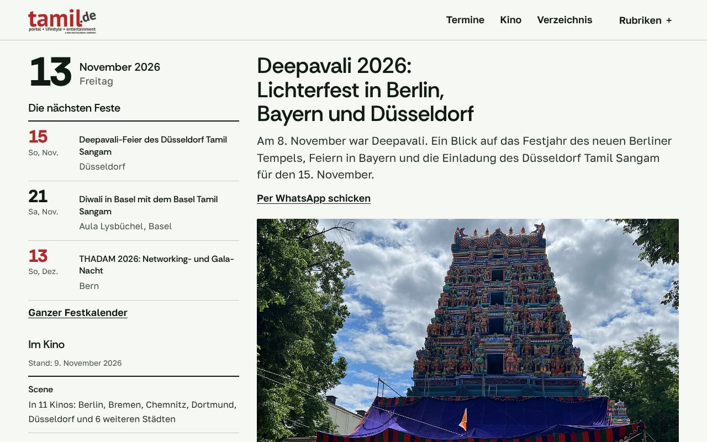<figcaption>Startseite, Desktop</figcaption></figure>
    <figure>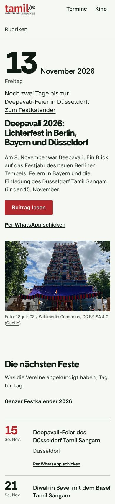<figcaption>Startseite, Handy</figcaption></figure>
  </div>
  <div class="links">
    <a class="haupt" href="hm-eigen/index.html">Startseite</a>
    <a href="hm-eigen/artikel.html">Artikel</a>
    <a href="hm-eigen/termine.html">Termine</a>
    <a href="hm-eigen/kino.html">Kino</a>
    <a href="hm-eigen/verzeichnis.html">Verzeichnis</a>
    <a href="hm-eigen/einreichen.html">Termin einreichen</a>
    <a href="hm-eigen/werben.html">Werben</a>
    <a href="hm-eigen/buchen.html">Buchen</a>
  </div>
  <h3>Redaktions-Cockpit in derselben Sprache</h3>
  <div class="zwei">
    <figure>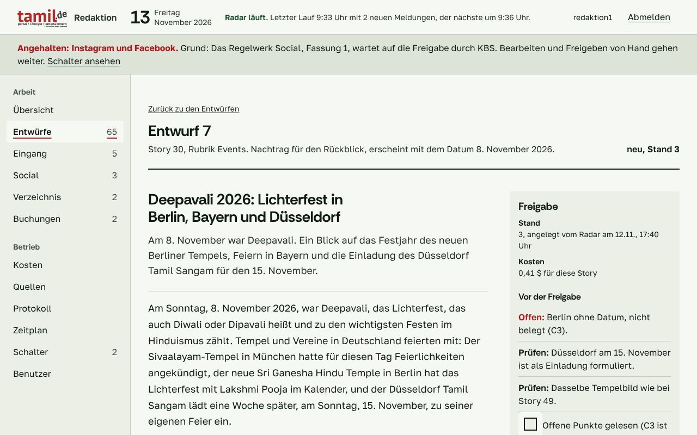<figcaption>Cockpit: Entwurf mit Belegen und Bild-Lizenz</figcaption></figure>
    <figure>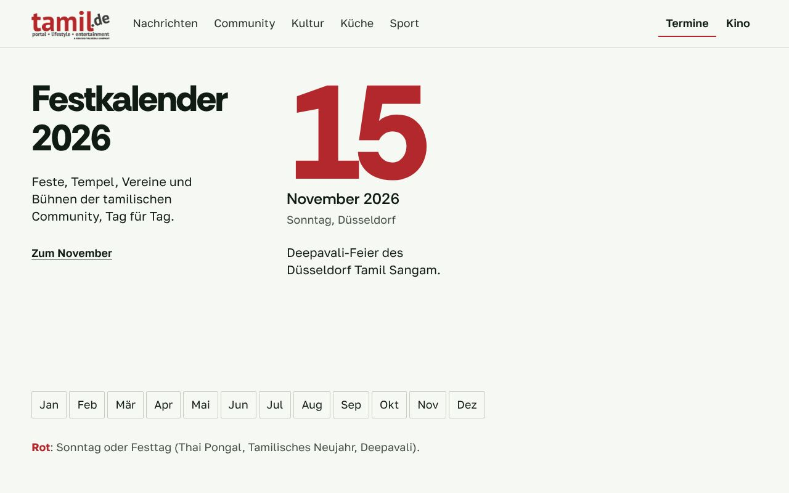<figcaption>Website: Termine</figcaption></figure>
  </div>
  <div class="links">
    <a href="cockpit-hm-eigen/uebersicht.html">Übersicht</a>
    <a href="cockpit-hm-eigen/entwurf.html">Entwurf mit Belegen</a>
    <a href="cockpit-hm-eigen/eingang.html">Eingang</a>
    <a href="cockpit-hm-eigen/social.html">Social</a>
    <a href="cockpit-hm-eigen/verzeichnis.html">Verzeichnis</a>
    <a href="cockpit-hm-eigen/buchungen.html">Buchungen</a>
  </div>
</div></section>
<section><div class="wrap">
  <div class="kopf"><h2>B: Kalenderblatt</h2><span>Hallmark-Theme Almanac</span></div>
  <p class="text">Die nächsten Feste als gedruckter Bogen ganz oben, mit Tag, Was, Wer, Wo; daneben der Aufmacher mit Foto. Hell, ruhig, Ziffern in Tabellenschrift.</p>
  <p class="stand">Zweite Prüfrunde ohne schweren Befund, danach Schliff: jede Hauptseite zeigt am Handy im ersten Bildschirm ein Foto. Schwäche: die Startseite wirkt eher wie ein Kalender als wie ein Magazin.</p>
  <div class="bilder">
    <figure>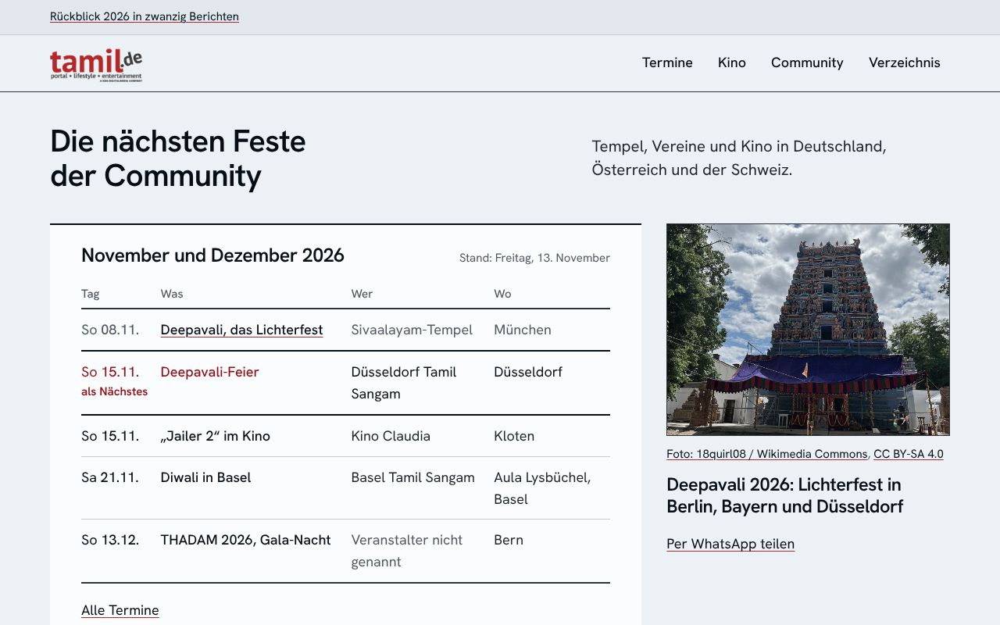<figcaption>Startseite, Desktop</figcaption></figure>
    <figure>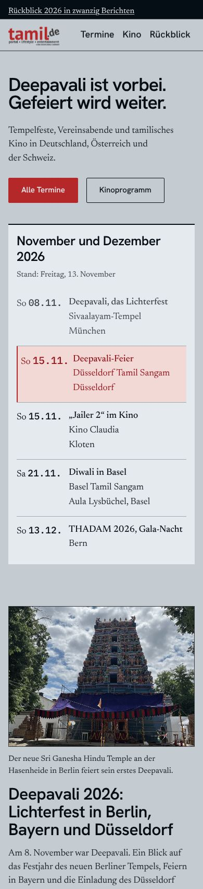<figcaption>Startseite, Handy</figcaption></figure>
  </div>
  <div class="links">
    <a class="haupt" href="hm-almanac/index.html">Startseite</a>
    <a href="hm-almanac/artikel.html">Artikel</a>
    <a href="hm-almanac/termine.html">Termine</a>
    <a href="hm-almanac/kino.html">Kino</a>
    <a href="hm-almanac/verzeichnis.html">Verzeichnis</a>
    <a href="hm-almanac/einreichen.html">Termin einreichen</a>
    <a href="hm-almanac/werben.html">Werben</a>
    <a href="hm-almanac/buchen.html">Buchen</a>
  </div>
  <h3>Redaktions-Cockpit in derselben Sprache</h3>
  <div class="zwei">
    <figure>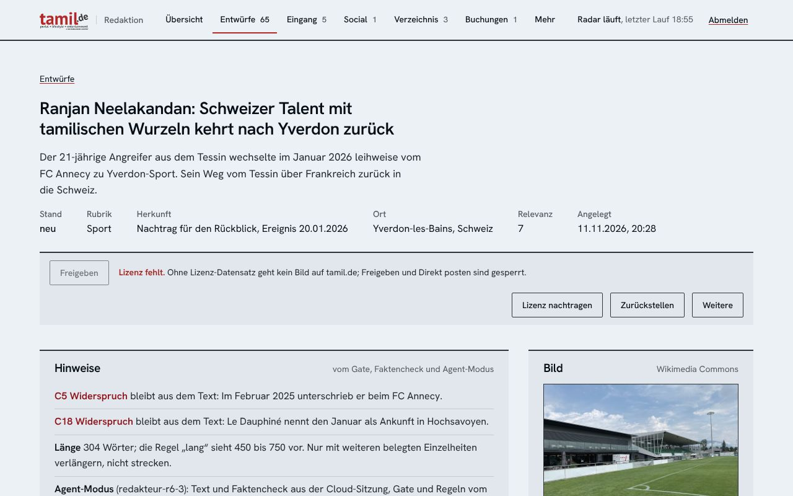<figcaption>Cockpit: Entwurf mit Belegen und Bild-Lizenz</figcaption></figure>
    <figure>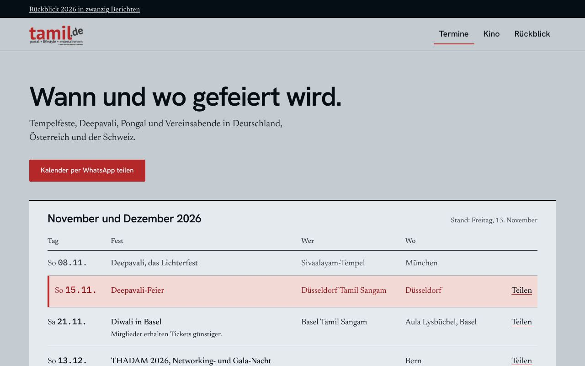<figcaption>Website: Termine</figcaption></figure>
  </div>
  <div class="links">
    <a href="cockpit-hm-almanac/uebersicht.html">Übersicht</a>
    <a href="cockpit-hm-almanac/entwurf.html">Entwurf mit Belegen</a>
    <a href="cockpit-hm-almanac/eingang.html">Eingang</a>
    <a href="cockpit-hm-almanac/social.html">Social</a>
    <a href="cockpit-hm-almanac/verzeichnis.html">Verzeichnis</a>
    <a href="cockpit-hm-almanac/buchungen.html">Buchungen</a>
  </div>
</div></section>
<section><div class="wrap">
  <div class="kopf"><h2>C: Aushang</h2><span>Eigene Richtung</span></div>
  <p class="text">Wie das Schwarze Brett im Tempel: Termine hängen als Aushang mit „Hängt noch n Tage“ und Abschnitten zum Mitnehmen (WhatsApp, Kalender als Datei, Karte). Rot nur für den nächsten Termin.</p>
  <p class="stand">Drei Prüfrunden; die schweren Befunde (Kartenraster, Hierarchie, Zettel am Handy) sind behoben. Schwäche: unter der Falz haben Nachrichten, Community und Küche noch dieselbe Form.</p>
  <div class="bilder">
    <figure>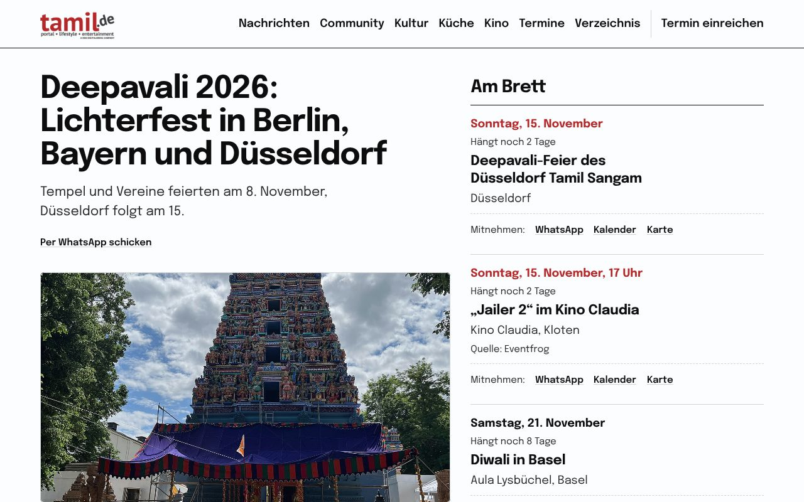<figcaption>Startseite, Desktop</figcaption></figure>
    <figure>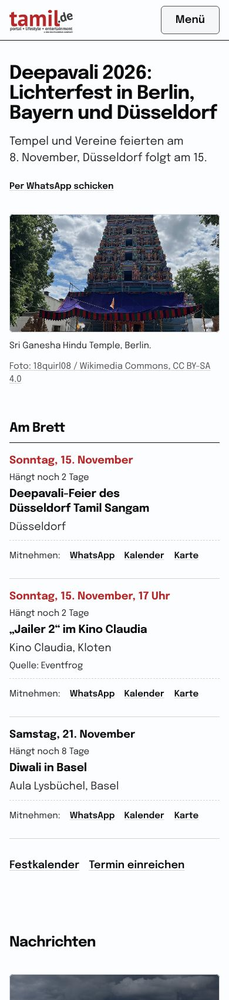<figcaption>Startseite, Handy</figcaption></figure>
  </div>
  <div class="links">
    <a class="haupt" href="hm-aushang/index.html">Startseite</a>
    <a href="hm-aushang/artikel.html">Artikel</a>
    <a href="hm-aushang/termine.html">Termine</a>
    <a href="hm-aushang/kino.html">Kino</a>
    <a href="hm-aushang/verzeichnis.html">Verzeichnis</a>
    <a href="hm-aushang/einreichen.html">Termin einreichen</a>
    <a href="hm-aushang/werben.html">Werben</a>
    <a href="hm-aushang/buchen.html">Buchen</a>
  </div>
  <h3>Redaktions-Cockpit in derselben Sprache</h3>
  <div class="zwei">
    <figure>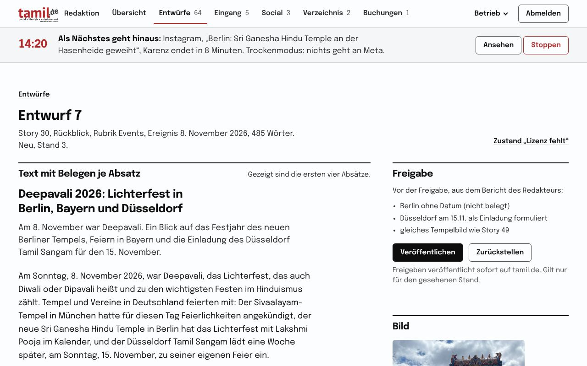<figcaption>Cockpit: Entwurf mit Belegen und Bild-Lizenz</figcaption></figure>
    <figure>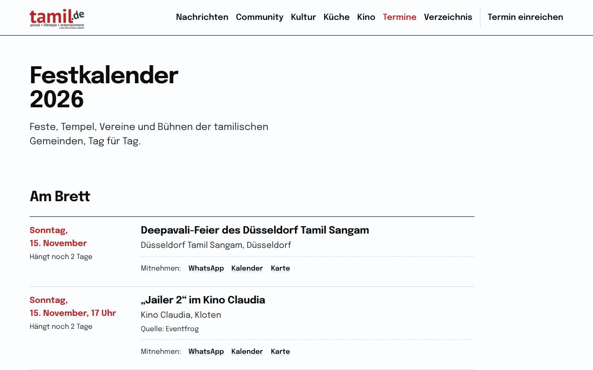<figcaption>Website: Termine</figcaption></figure>
  </div>
  <div class="links">
    <a href="cockpit-hm-aushang/uebersicht.html">Übersicht</a>
    <a href="cockpit-hm-aushang/entwurf.html">Entwurf mit Belegen</a>
    <a href="cockpit-hm-aushang/eingang.html">Eingang</a>
    <a href="cockpit-hm-aushang/social.html">Social</a>
    <a href="cockpit-hm-aushang/verzeichnis.html">Verzeichnis</a>
    <a href="cockpit-hm-aushang/buchungen.html">Buchungen</a>
  </div>
</div></section>
<section><div class="wrap">
  <div class="kopf"><h2>D: Kalenderboden</h2><span>Eigene Richtung</span></div>
  <p class="text">Die Seite ist in Felder ungleicher Breite gelegt, getrennt durch Tintenfugen wie ein Terrazzoboden; der laufende Monat liegt als Fliesenfeld, Festtage sind ausgelegt. Die Farbe kommt nur aus den Fotos.</p>
  <p class="stand">Drei Prüfrunden; die schweren Befunde (Zeilenlänge, Bildausschnitt, Kalenderboden am Handy, Termine zuerst) sind behoben. Schwächen: am Desktop zeigt der erste Bildschirm nur Aufmacher und Kalender; die Kopfschrift ist eher neutral.</p>
  <div class="bilder">
    <figure>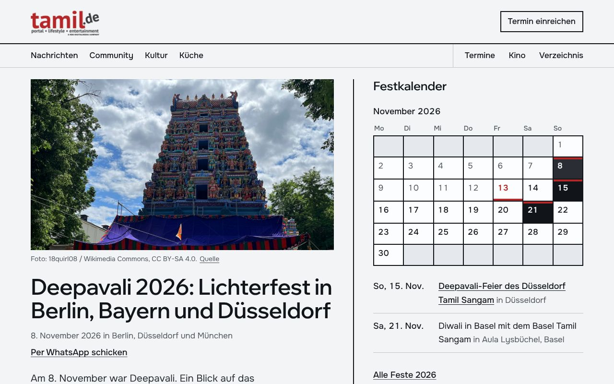<figcaption>Startseite, Desktop</figcaption></figure>
    <figure>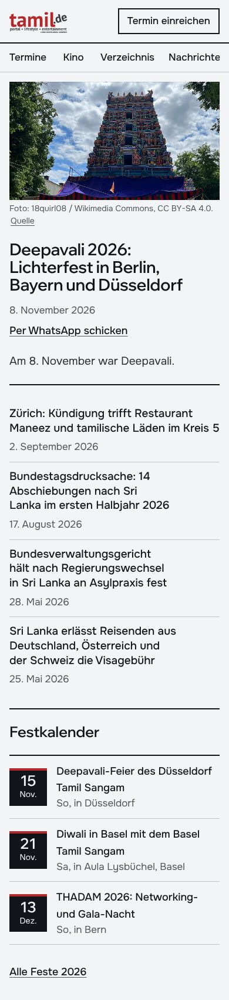<figcaption>Startseite, Handy</figcaption></figure>
  </div>
  <div class="links">
    <a class="haupt" href="hm-terrazzo/index.html">Startseite</a>
    <a href="hm-terrazzo/artikel.html">Artikel</a>
    <a href="hm-terrazzo/termine.html">Termine</a>
    <a href="hm-terrazzo/kino.html">Kino</a>
    <a href="hm-terrazzo/verzeichnis.html">Verzeichnis</a>
    <a href="hm-terrazzo/einreichen.html">Termin einreichen</a>
    <a href="hm-terrazzo/werben.html">Werben</a>
    <a href="hm-terrazzo/buchen.html">Buchen</a>
  </div>
  <h3>Redaktions-Cockpit in derselben Sprache</h3>
  <div class="zwei">
    <figure>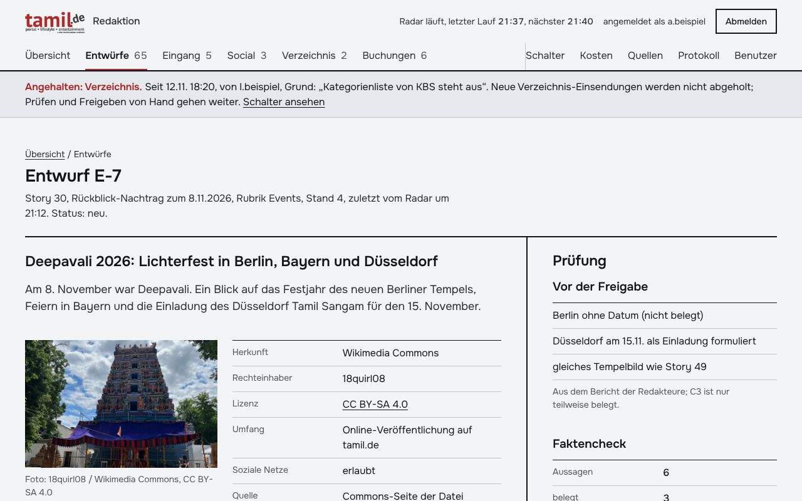<figcaption>Cockpit: Entwurf mit Belegen und Bild-Lizenz</figcaption></figure>
    <figure>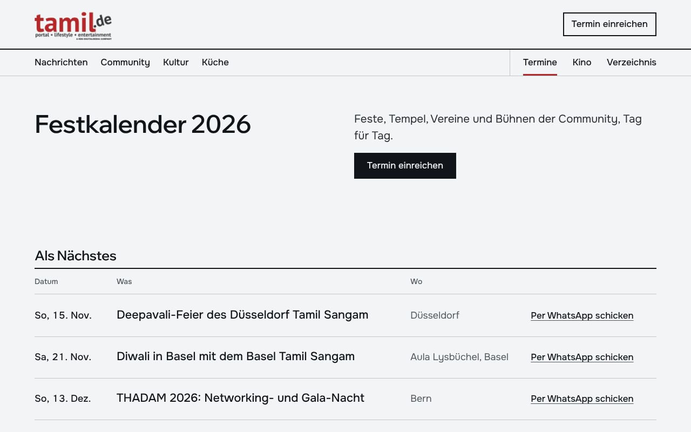<figcaption>Website: Termine</figcaption></figure>
  </div>
  <div class="links">
    <a href="cockpit-hm-terrazzo/uebersicht.html">Übersicht</a>
    <a href="cockpit-hm-terrazzo/entwurf.html">Entwurf mit Belegen</a>
    <a href="cockpit-hm-terrazzo/eingang.html">Eingang</a>
    <a href="cockpit-hm-terrazzo/social.html">Social</a>
    <a href="cockpit-hm-terrazzo/verzeichnis.html">Verzeichnis</a>
    <a href="cockpit-hm-terrazzo/buchungen.html">Buchungen</a>
  </div>
</div></section>

<section><div class="wrap">
  <h2>Nach der Wahl</h2>
  <ul class="punkte">
    <li>Die gewählte Linie geht als Probeseite zum Auftraggeber (Tor G2/G3), danach ins WordPress-Theme und ins Cockpit.</li>
    <li>Einreichen, Verzeichnis und Werbebuchung sind gebaut und bleiben im Echtbetrieb aus, bis Rechtstexte und Auftragsverarbeitung von KBS vorliegen.</li>
  </ul>
</div></section>

<footer><div class="wrap">Stand 13. November 2026, 23 Uhr. Bilder: Wikimedia Commons und Quellen der Beiträge, Nachweise auf den Seiten der Linien.</div></footer>
